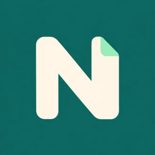

NIVILOG · TU OPINIÓN CUENTA
¿Qué te resulta útil? ¿Qué podría ser más fácil? Tu experiencia nos ayuda a elegir qué mejorar.
Una app gratuita que crece con quienes la usan.
Solo es obligatorio indicar tu nivel de satisfacción.
El envío de comentarios aún no está disponible. Vuelve pronto; no se enviará nada de lo que escribas aquí.
Tus respuestas se envían en privado a Hoplontec a través de FormSubmit. No pedimos tu nombre ni correo. No incluyas datos de salud ni información de contacto.
Solo enviamos tu valoración, el tema elegido, tu comentario, el idioma del formulario y una referencia aleatoria del envío. No adjuntamos datos de tu cuenta, diario, fotos ni identificadores del dispositivo. GitHub aloja esta página; FormSubmit procesa el envío y lo entrega a Hoplontec por correo. Estos proveedores reciben información de conexión, como tu dirección IP. FormSubmit puede mostrar un CAPTCHA. Esta página no tiene scripts de analítica ni publicidad.
FormSubmit indica que mantiene un archivo de envíos durante 30 días. Hoplontec conserva los comentarios sobre la app hasta 180 días para revisar y priorizar mejoras. Este formulario no permite una respuesta personal. Enviar comentarios es opcional y no afecta a tu acceso a NiviLog.